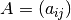
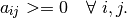

example_package Package¶
example_package Package¶
just an example package to demonstrate desired package structure and documentation style. This is the package doc string, which is shown as description of this package. The example package is not deployed with setuptools/distutils
function_template Module¶
module doc string goes here?
- emma2.example_package.function_template.check_nonnegativity(A)¶
Checks nonnegativity of a matrix.
Matrix  is nonnegative if

Parameters: A : ndarray, shape=(M, N)
The matrix to test.
Returns: nonnegative : bool
The truth value of the nonnegativity test.
Notes
The nonnegativity test is performed using boolean ndarrays.
Nonnegativity is import for transition matrix estimation.
Examples
>>> import numpy as np >>> A=np.array([[0.4, 0.1, 0.4], [0.2, 0.6, 0.2], [0.3, 0.3, 0.4]]) >>> x=check_nonnegativity(A) >>> x True
>>> B=np.array([[1.0, 0.0], [2.0, 3.0]]) >>> x=check_nonnegativity(A) >>> x True